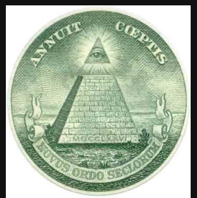
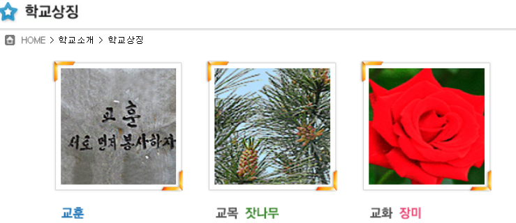

삼육중학교가 일루미나티인 증거
그전에박준우
김시연
호로 눈갱이다
본론으로들어가자
1. 삼육중학교의 로고
삼육중학교의 로고이다.
자세히 보아라
원안에 삼각형 안에 어떤 한자가 있다.또한 글자가 많이 새겨져 있다. 이것은

그렇다 바로 일루미나티의 대표적인 상징이다.
2. 종의 전설
먼저 서울 삼육중학교의 음운을 보자. ㅅ ㅓ ㅇ ㅜ ㄹ ㅅ ㅏ ㅁ ㅇ ㅠ ㄱ ㅈ ㅜ ㅇ ㅎ ㅏ ㄱ ㄱ ㅛ 이다.
그리고 초성이 ㅇ 인것을빼면 모두 16개 이다, 16개 어디서 많이 들어보지 않았는가
바로 알파벳 숫자 16번째인 P 이다, 우선 p는 종이다. 왜냐하면 과학에서 p파s파 가 있다. 여기서 p파가 종파이므로 서로 '파'를 약분해버리면 p는 종이 된다, 또한 극소수의 사람들만 아는 전설이 있다, 바로 서울삼육중학교에는 삼각형이 산다는 전설이다. 먼저 삼각형은 일명 '종' 이라고 불른다. 왜냐하면 종 이기때문이다, 그리고 더더욱 중요한것은 앞에서 말한 삼각형은 바로
그렇다 바로 일루미나티의 삼각형 이다.
3. 종의 전설 마무리
삼각형은 인간이 아니다. 따라서 말을 따라할수밖에 없다. 말을 따라하는것 무엇인가.바로 앵무새이다, 앵무새는 대체로 빨간색이다. 자 이제 자세히 보아라

자세히 봤는가 문제점은 여기에 있다
삼각형은 뾰족하다 따라서 장미를 보았다, 그런데 장미의 글자가 빨간색이지 않은가...
여기서 확실해 졌다.
삼각형과 서울삼육중학교는 심도 있는 연관이 있고
일루미나티라는 사실을.....
참고로 나는 지랄을 잘한다